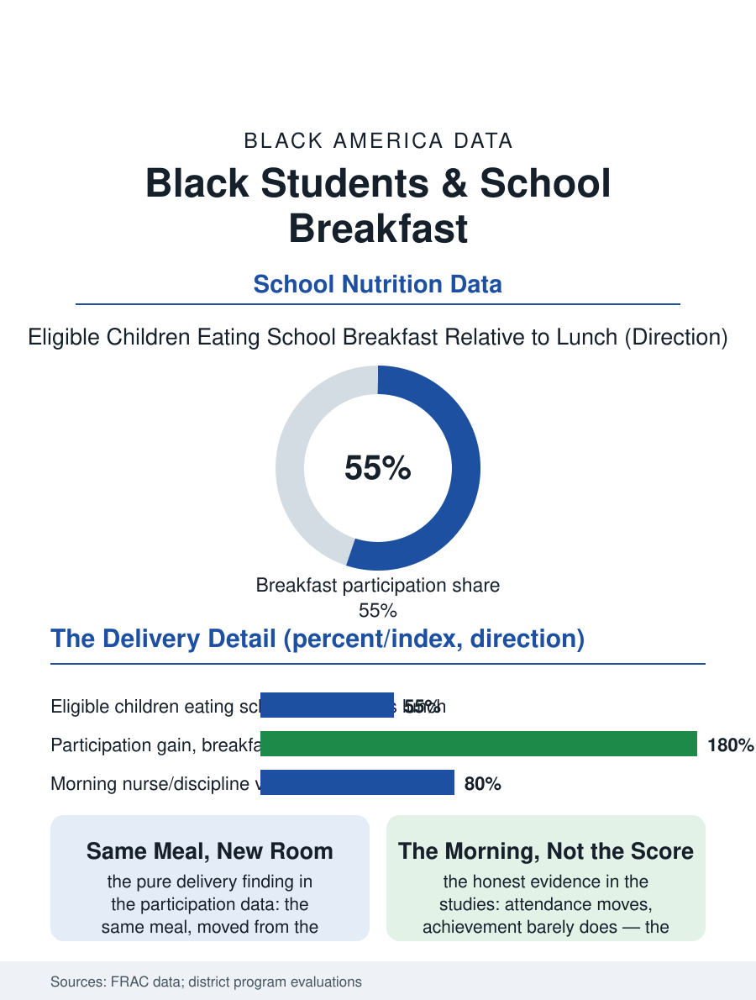

Black Education
The Day's First Lesson: Black Students and School Breakfast
The same meal doubles its reach when it moves from the cafeteria's stigma to the classroom's first minutes. The breakfast file.

The school breakfast is the nutrition file's quietest program and its most contested morning: the federal meal served in the cafeteria before the bell reaches a fraction of the eligible children, while the same meal moved into the classroom after the bell reaches nearly all of them, a delivery detail whose effect sizes rival interventions costing a hundred times more. Black students, the eligible population's largest share, are the file's center. This article reads the breakfast file.
The Cafeteria's Empty Hour
The participation data state the delivery problem in its purest form: the free and reduced-price lunch's eligible child eats the school lunch at high rates and the school breakfast at roughly half that rate in the national data, the gap composed of the bus's arrival against the cafeteria's hour, the stigma of the early line's visible poverty, and the family's morning logistics, none of which is an appetite variable. The breakfast in the classroom model abolishes the three barriers with one move, serving the meal in the first period's opening minutes as the class's common start, and the districts that adopted it, including the great urban systems whose students are this file's population, recorded the participation's near-doubling and the nurse's and the discipline office's morning numbers moving in the directions the advocates promised, the hungry child's irritability having been a line item in the behavior file all along under another name. The bus driver's file belongs inside the breakfast's logistics, because the route's timing is the cafeteria model's silent partner: the district that moved the meal to the classroom freed the program from the route's mercy, the late bus's children eating with their class rather than missing both the meal and the morning's start, a detail the transportation office's data and the classroom's attendance sheet record as the same fact in two ledgers. The grab-and-go cart at the school door is the design's halfway form, and the second-chance breakfast after the first period its latest, each iteration moving the meal closer to the child's actual morning rather than the institution's preferred one.
The Evidence and the Opposition
The academic evidence is the file's honest mixture: the attendance and tardiness effects are the consistent finding, the achievement effects small and contested in the rigorous studies, the health effects, the morning's blood sugar against the test's first hour, biologically plain and educationally modest, so that the program's case rests where the file puts it, on the child's morning rather than on the score's promise. The opposition's file is the classroom's: the instructional minutes the meal consumes, the mess and the pests of the teachers' accounts, the sugared menu of the critics' photographs, arguments the adopting districts answered with the grab-and-go and the second-chance breakfast's designs and the menu standards' tightening, the file's equilibrium being the program's survival in every district that measured its own mornings after the change. The universal meals era, the community eligibility provision's expansion letting the high-poverty school serve everyone free without the application's stigma or the paperwork, has converted the breakfast question in the eligible schools from the family's form to the district's logistics entire, the file's direction of travel in the current policy data.
The Day's First Lesson
The breakfast file closes on the morning's meaning in the school's own terms, because the meal in the classroom is the day's first collective act, the class eating together at the hour the boarding school's and the wealthy home's children have always eaten, a normalization whose value the participation data count and whose dignity the students' accounts state without the data's help. The program's cost against the file's other interventions is the advocates' closing arithmetic, the meal's few dollars against the remediation's thousands, the comparison the budget committees keep making and occasionally, in the adopting districts, acting on. The participation series counts the breakfasts each year, the classroom model's share rising. The file's last entry is the first period's opening, the cart at the door and the day's work beginning over the shared meal, in the room where the child who arrived hungry is, for the first time in the school's design, indistinguishable from the child who did not, which is the whole of the file in one seating chart.
More in Black Education
Black Educational Attainment: High School Parity, the College Gap
About 89 percent of Black adults hold a high school diploma and one in four holds a bachelor's degree or higher — the attainment ladder, the college completion gap, and the generational trend.
Historically Black Colleges and Universities: Enrollment and Degrees
More than 100 HBCUs enroll roughly 290,000 students and award about one in six Black bachelor's degrees — an outsized share from a small sector. The federal education data.
Black College Enrollment: 2.4 Million Students
About 2.4 million Black students are enrolled in American colleges — nearly two-thirds of them women. The NCES enrollment data by sector, level, and trend.
Source: Food Research and Action Center school breakfast reports; Community Eligibility Provision participation data.